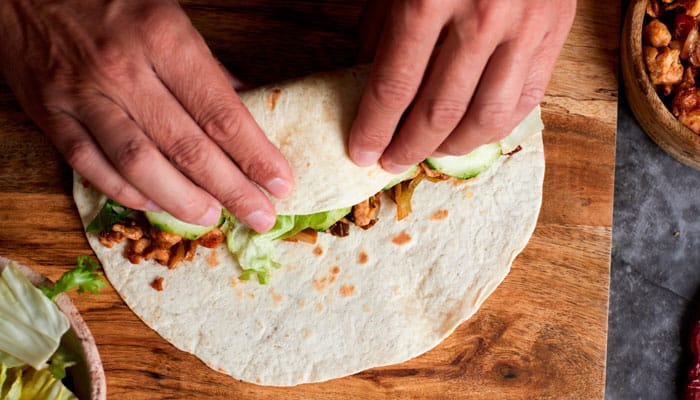
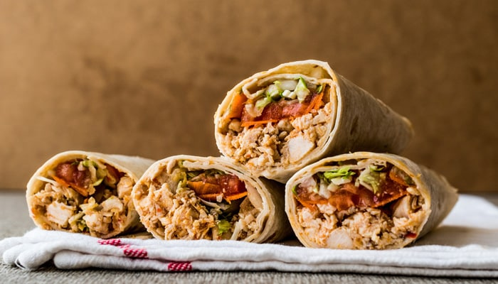

Volver al menu principal
La carne de pollo podría macerarse durante, al menos, 12 horas con distintas especias al gusto. Para ello, hay que elegir el tipo de carne, limpiarla, elegir las especias que mejor vayan a quedar, preparar el macerado, añadirlo y dejar reposar en la nevera. Tras ese tiempo, hay que asar la carne y como en las casas no se tiene el típico pincho de kebab, el horno hace lo que puede. La conclusión es que el resultado podría ser rico pero no igual, así que la solución para conseguir un resultado realista es comprar la carne de kebab loncheada de pollo ya preparada. Solo hay que calentarla siguiendo las instrucciones del fabricante ¡y listo!
También hay que elegir los ingredientes que lleva la receta de durum de pollo casero. Lo más habitual es lavar y cortar lechuga, añadir unas rodajas de tomate fresco y un poco de cebolla (la morada es más dulce que la blanca). Una ensalada variada muy saludable en la que se suelen incluir también salsa de yogur y/o salsa picante y otros complementos al gusto como queso rallado o más especias.
El montaje comienza con una tortilla de trigo caliente a la que se le añaden los vegetales, los complementos y las salsas para terminar con la carne de kebab de pollo ya caliente. Todo esto hay que enrollarlo con cuidado de que no se salga nada (cuidado con pasarse con la cantidad) y cerrando la parte de abajo para que al comerlo no se caigan los ingredientes.
Este durum turco es un plato tan rico, sencillo, saludable y completo puede parecer un poco engorroso de preparar por el montaje, pero nada más lejos de la realidad. Haciendo uno con cuidado el resto saldrán perfectos y sin ninguna dificultad. Además, si se enfría, se puede poner unos segundos en la sartén (sin aceite) para que vuelva a coger la temperatura adecuada